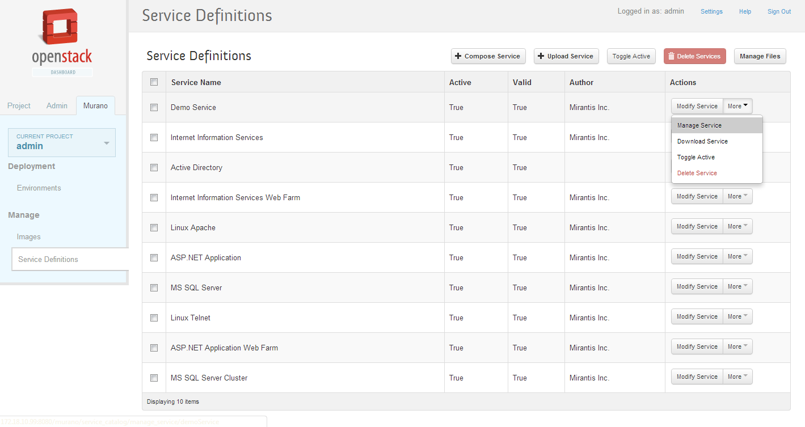

Contents
This chapter describes how to operate with Murano Metadata Repository via UI.
Metadata Repository is a REST API server stores all data necessary for a service deployment. Information about service and it's dependencies is called service definition or manifest. Murano Conductor and Dashboard will load these service definitions and service or application will be available for creation. Besides manifests Murano Repository stores this types of data:
ui - UI definitions for Murano dashboard
workflows - set of rules for Murano Conductor
heat - templates for spawning instance with Heat
agent - Murano Agent templates
scripts - Murano Execution Plans
In "Murano" tab go to the "Service Definitions" panel:
|  |
From this view you are able to perform the following actions:
Compose Serviceprovides a form for creating new service manifest. After this operation is complete new service will appear in Service Definitions table and you will be allowed to download this service definition, modify or delete it.Upload Serviceprovides a form for uploading tar.gz archive with already composed service manifest and other dependency files.Manage Filesbutton will redirect you to a view where you can manipulate with all files stored in Metadata Repository: download, delete or upload new ones.Toggle Activebutton will make service active or inactive depending on the current state.Modify Servicegives you opportunity to modify attributes of service definition.Manage Serviceredirects you to a view with information about selected service and service files for all data types that Murano Repository supports. From here you can upload file and add it to service dependency in one click.Download Servicesaves archive with all files used by specified service.Delete Serviceremoves service manifest and all dependencies that are not used by other services from Murano Repository server.